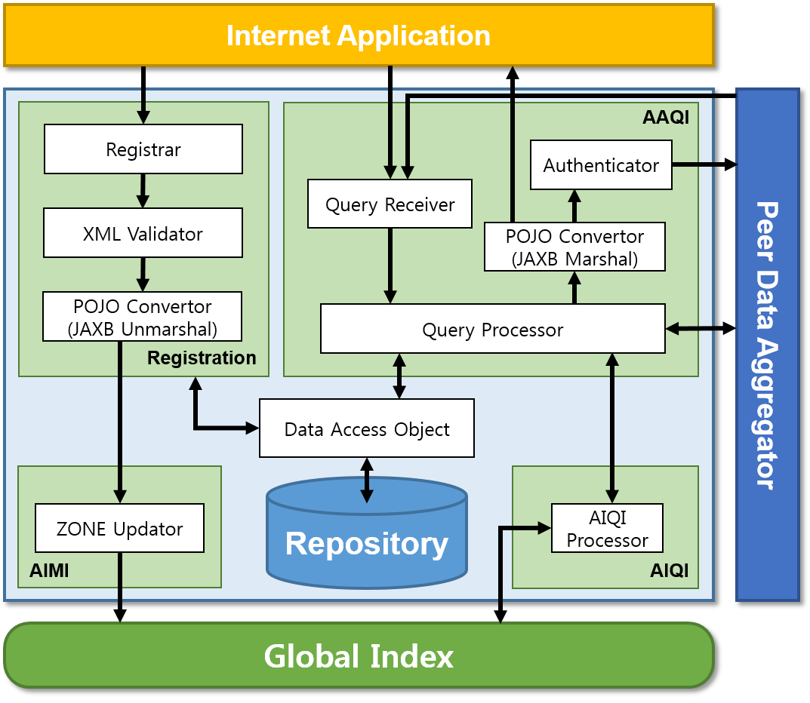

GS1 Source is a framework for sharing product data in digital world and provides standard schema for specific data according to standard. In Business-to-Consumer perspective, GS1 seeks that brand owners are able to pursue the rising value of the brand by building trust with consumers, developers can more efficiently develop applications that can ensure delivering authentic data to consumers, and consumers can obtain authentic and accurate data and trust that digital data, no matter wherever they are.
